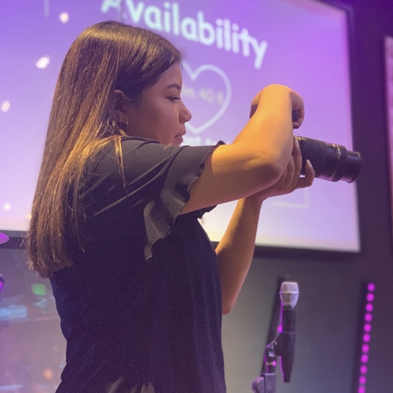
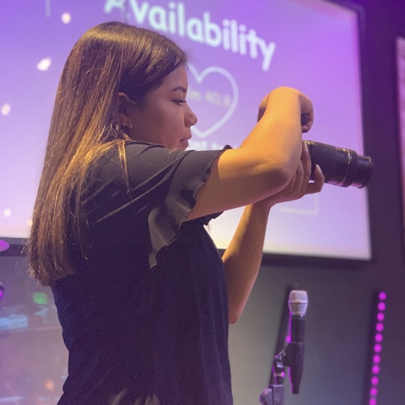

Nathaly Romero
Nathaly Romero is someone you want on your side. She is a hard worker known for executing tasks in spite of obstacles. Her passion for learning and out-of-the-box thinking has unlocked a path lined with coveted opportunities. She is a natural teacher and is earnest in sharing her knowledge with others.
Currently, she devotes her full attention to the study of Biology at the University of California, Riverside. She plans to make herself, her experiences, and her education as useful to the goal of more accessible healthcare for underserved communities.
With experience as a clinic intern and social media manager, Nathaly has developed a wide range of invaluable skills that are sure to make her as adaptable as any potential laboratory team requires of her.
Experience
Service Producer and Social Media Manager
As Service Producer:
• Worked closely with the Lead Children’s Worship Pastor and other team leaders to understand the service expectations and ensure a quality live experience.
• Specified arrival times of volunteer members under my supervision and delegated responsibilities to them as needed during creative planning sessions.
• Coached volunteers through technical issues as supervisor of the lighting, lyrics, and projections which developed strong teaching abilities.
• Reported a service summary to the Lead Children’s Worship Pastor that discussed the highs and lows so as to improve on the next service and my own leadership skills.
As Social Media Manager:
• Created posting schedule and designed a cohesive theme for the Children’s Ministry Instagram and Facebook accounts that are still currently in use.
• Collected photographs of the weekly services and edited the most appealing for public postings in order to best portray the values of the ministry.
• Promoted to work directly under the lead media manager where I assisted in updating the church’s main Instagram page by suggesting and designing a more contemporary theme.
Intern
• Greeted and directed patients
• Provided patients with the correct paperwork
• Called patients to remind them of appointments
• Filed medical and billing reports
Cashier
• Demonstrated a complete understanding of all menu items and rotating specials in order to give customized recommendations to guests as needed.
• Provided exceptional customer service during a high volume, fast paced environment that resulted in rapport with regular customers and positive reviews from new customers.
• Oversaw food preparation area and restocked items to ensure a sufficient supply throughout the shift, efficiency, and to prevent any discrepancies.
• Implemented new methods of food packaging that reduced customer wait time and contemporary tactics to increase gratuity.
• Upheld all local and up-to-date COVID-19 safety protocols including increased sanitization, mask policies, and enforcing a limited capacity all while processing multiple orders and cash/card transactions.
Education
University of California Riverside
Portfolio


